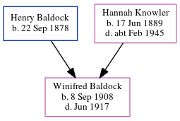

Winifred Alice Baldock 1908 - 1917
[ Home ] | [ Calendar ] | [ Surnames Index ] | [ Errors ] | [ Family History ]The older of 2 children of Henry Baldock (a farm labourer) and Hannah Knowler, Winifred Baldock, the second cousin once-removed on the mother's side of Nigel Horne, was born in Adisham, Kent, England on 8 Sept 19081,2,3 and baptised there at Holy Innocents on 18 Oct 1908. On 2 Apr 1911, she was living in Barnsole, Kent, England4.
She died in Jun 1917 in Dover, Kent, England2.
Parents
- Henry was born on 22 Sept 1878
- Hannah Mary was born on 17 Jun 1889
Citations
- 1911 England Census Online publication - Provo, UT, USA: Ancestry.com Operations, Inc., 2011.Original data - Census Returns of England and Wales, 1911. Kew, Surrey, England: The National Archives of the UK (TNA), 1911. Data imaged from the National Archives, London, England.
- England & Wales, Death Index: 1984-2005 Online publication - Provo, UT, USA: The Generations Network, Inc., 2007.Original data - General Register Office. England and Wales Civil Registration Indexes. London, England: General Register Office. © Crown copyright. Published by permission of the Cont
- England & Wales, FreeBMD Birth Index, 1837-1915 Online publication - Provo, UT, USA: The Generations Network, Inc., 2006.Original data - General Register Office. England and Wales Civil Registration Indexes. London, England: General Register Office. © Crown copyright. Published by permission of the Cont
- 1911 Census for England & Wales - Findmypast (was age 2 and the daughter of the head of the household)
Media
England & Wales deaths 1837-2007 Transcription - BMD-D-1917-2-AZ-000047-137
England & Wales births 1837-2006 Transcription - BMD-B-1908-4-AZ-000027-253
Canterbury Baptisms Image - GBPRS-CANT-005265408-00206
1911 Census for England & Wales - GBC/1911/RG14/04555/0093/3
Family Tree
Map
Generated by ged2site. Last updated on Jul 3, 2024
Known Issues
May have been living with mother on 2 Apr 1911, but the addresses don't match or aren't detailed enough to be sure
May have been living with father on 2 Apr 1911, but the addresses don't match or aren't detailed enough to be sure